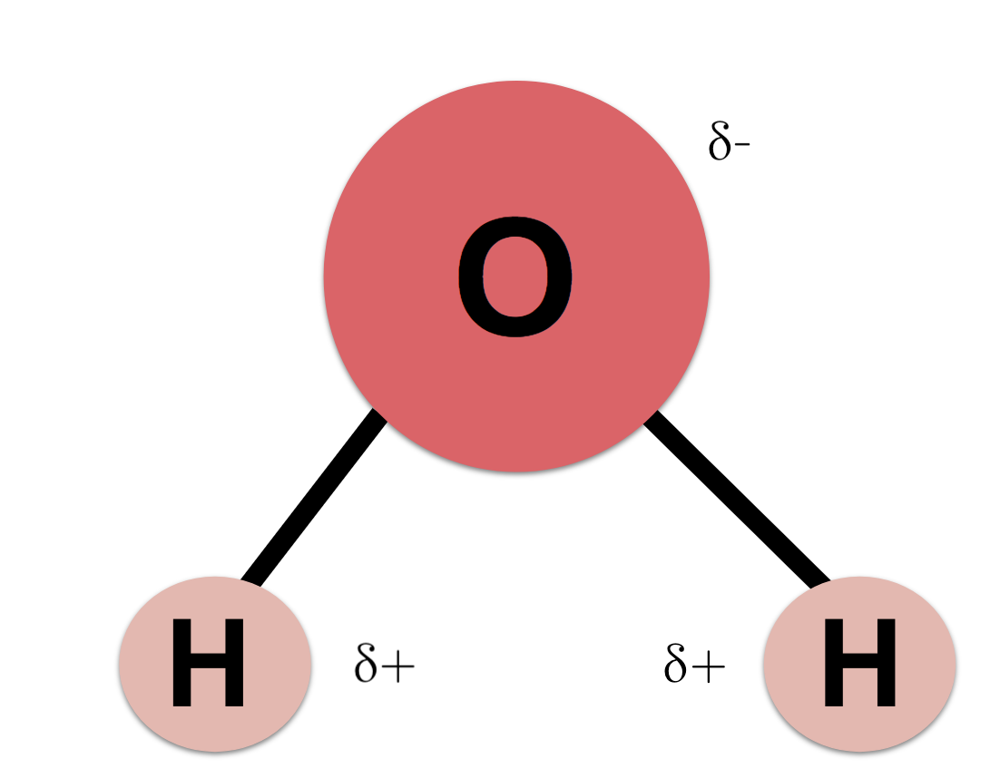

Noether's work on symmetry is the foundation of how chemists classify molecules. We have seen this in last unit. Every molecule belongs to a symmetry group, and that group determines almost everything about its chemistry, how it bonds, what reactions it can be part of, and what kind of light it absorbs. Water's bent shape at 104.5° never changes, it is a direct consequence of the symmetry rules that Noether's ideas describe. Without her framework, modern chemistry would have no actual foundation.
